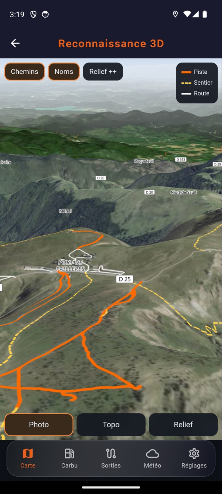
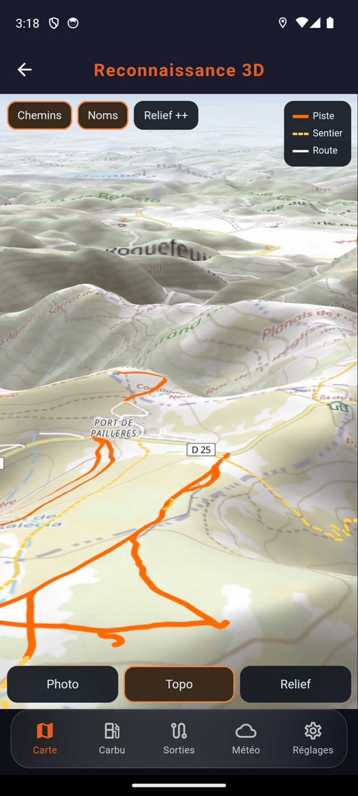

Tu roules là où la route s'arrête.
Les cartes IGN dans ta poche, même sans réseau. Et si tu tombes, tes contacts et les riders de ta sortie sont prévenus avec ta position, sans que tu aies à sortir le téléphone.
Gratuit pendant la phase de test. France métropolitaine.

Un GPS de route t'abandonne dès que le bitume s'arrête. GO FREE prend le relais : fonds officiels de l'IGN, emportables hors réseau, et une chaîne d'alerte qui part toute seule quand tu ne peux plus le faire toi-même.
La carte de l'IGN, emportée
Le fond topographique officiel et la photo aérienne de la Géoplateforme, avec l'ombrage du relief pour lire une pente avant de s'y engager.
-
Hors ligne
Les tuiles déjà vues restent sur le téléphone. Le fond de vallée sans réseau ne t'efface pas la carte.
-
Le relief
L'ombrage IGN creuse les vallées et fait ressortir les crêtes. Tu vois la pente avant de t'y engager.
-
Les traces
Enregistre ta sortie, retouche-la, fusionne deux segments. Partage-la ou reprends celle d'un autre.
-
Le guidage
Flèches de manœuvre, carte et trace toujours visibles, écran qui reste allumé. Lisible avec des gants.

Le mode observation
Le terrain en relief, incliné, avant d'y aller. Les chemins prennent une couleur selon ce qu'ils sont : piste, sentier ou route.
-
Le relief, forcé
Trois crans d'exagération. Une pente qui semble molle vue du dessus se redresse dès qu'on incline le terrain.
-
Chaque chemin, sa couleur
Piste en orange, sentier en jaune, route en blanc. Tu sais ce qui t'attend avant de charger.
-
Photo ou topo
Le même versant en vue aérienne puis en fond IGN. L'un montre la végétation, l'autre les courbes.


Si tu tombes et que personne ne te voit
L'accéléromètre et le GPS détectent un choc suivi d'une immobilité. Un compte à rebours s'affiche. Sans réaction de ta part, l'alerte part.
-
Détection de chute
Trois signaux doivent converger : le choc, l'orientation d'arrivée, les vibrations retombées. Un nid-de-poule ne déclenche rien.
-
Compte à rebours
Tu gardes la main : un geste annule l'alerte. Le délai se règle selon le terrain que tu pratiques.
-
Suivi solo
Tes proches suivent ta progression sur un lien, sans rien installer. Tu coupes quand tu veux.
-
Alerte au groupe
Les riders de ta sortie sont prévenus en même temps que tes proches, avec ta position. Ils sont à quelques centaines de mètres.
La limite honnête. Détection et alertes reposent sur des capteurs, un réseau mobile et des services tiers. Aucun des trois n'est garanti sur une piste. Cette application ne remplace ni un moyen d'alerte dédié, ni le fait de prévenir quelqu'un avant de partir.
Moto, 4×4, camping-car
Le véhicule choisi ne change pas qu'une icône : il décide de ce que l'application cherche autour de toi et de ce qu'elle te propose comme itinéraire.
-
Moto
Stations-service et réparateurs moto autour de toi, profil d'itinéraire qui accepte les pistes carrossables.
-
4×4
Stations et garages, mêmes pistes carrossables, mêmes traces partagées par la communauté.
-
Camping-car
Aires de services, vidange, eau potable et bornes de recharge. Le gabarit que tu déclares écarte les routes qui ne passent pas.
Sur le gabarit. Hauteur, longueur et poids partent avec le calcul d'itinéraire. Seuls les obstacles relevés dans OpenStreetMap peuvent être évités : un pont bas non cartographié ne le sera pas.
Ce que dit la loi, avec toi sur la piste
Loi Lalonde, chemins ONF, pistes DFCI, espaces naturels sensibles, règles du bivouac sauvage, zones à risque. Consultable hors ligne, au moment où la question se pose.
-
Les textes qui te concernent
Ce qui est autorisé, ce qui est toléré, ce qui est interdit, dit en français plutôt qu'en articles.
-
Les numéros d'urgence
112, 15, 17, 18, 114, et le secours en montagne. Disponibles sans réseau de données.

Le carnet du col
En haut de certains cols, une boîte en métal abrite un carnet. Celui qui passe écrit une ligne : la date, sa machine, le temps qu'il faisait. Cette page est ce carnet-là.
Il est vide, et il le restera tant que personne n'y aura écrit. Aucun avis ne sera inventé pour le remplir.
Trois phrases suffisent : ce que tu roules, dans quel massif, et ce qui t'a servi. Dis-nous si on peut publier ton prénom et ta machine. Ou écris directement à marc [chez] gofree.fr.
La suite
Le camping-car rejoint la moto et le 4×4 : mêmes cartes, mêmes traces, mêmes secours, avec ce qu'il faut en plus pour voyager en autonomie. Pas de date annoncée tant que ce n'est pas prêt.
Camping-car en construction
L'app est en test. Viens l'éprouver.
Elle roule déjà, mais elle a besoin de vrais terrains et de vrais retours. Si tu sors régulièrement en moto tout-terrain, en 4×4 ou en camping-car, ta place est ici.
Demander une place dans les testsLe lien d'inscription TestFlight arrive. En attendant, écris à marc [chez] gofree.fr en disant ce que tu roules et où. Couverture France : les fonds viennent de l'IGN et s'arrêtent aux frontières.